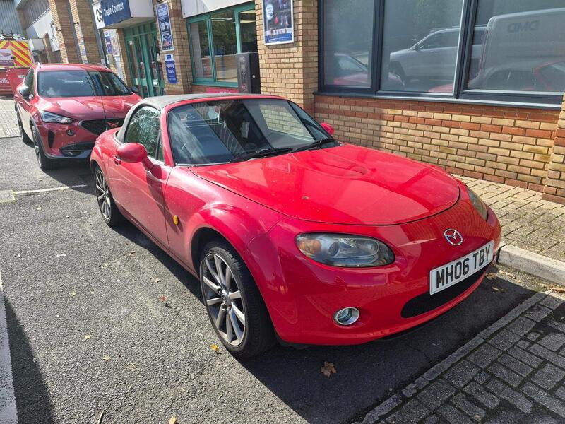
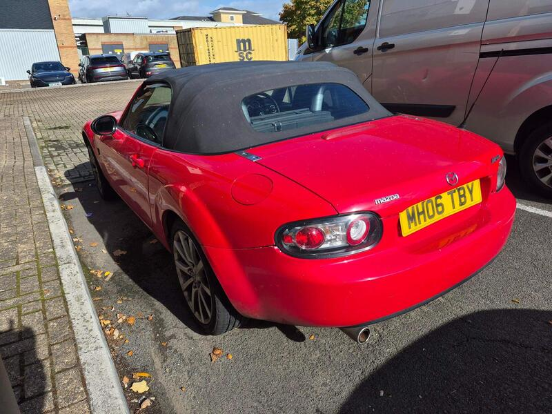
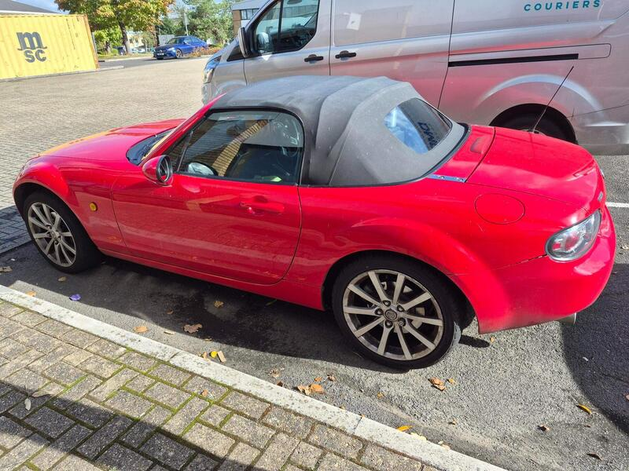
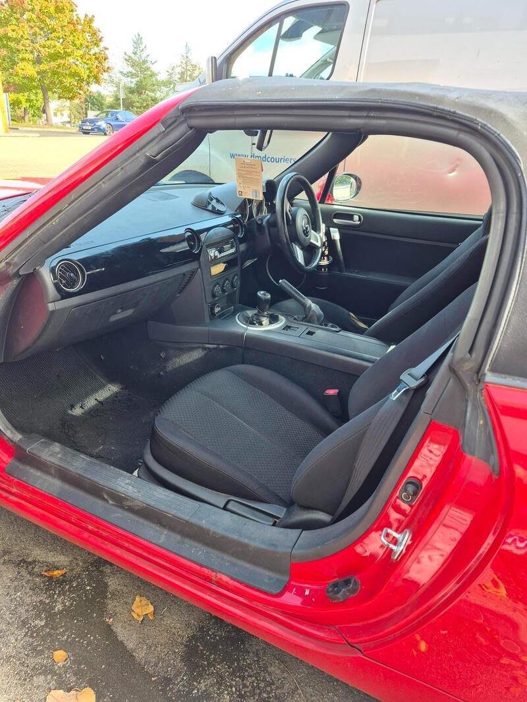

Seller photos from the AutoTrader ad.
Mazda MX-5 2.0i
A 2.0 NC with a fresh MOT, 9 miles away. Just get the import story straight.
Key facts
| Price | £2,495 |
|---|---|
| Year | 2009 |
| Miles | 95,000 |
| Model | Mazda MX-5 2.0i |
| Colour | Red |
| Registration | 2009 (06 reg) |
| Owners | 3 owners |
| Service history | Not stated |
| MOT (AutoTrader ad) | 27 Sep 2027 (ad) |
| Seller | Private |
| Location | Woking |
| From GU7 | 9 mi (AutoTrader) |
| Listed on AutoTrader | 14/10/2026 |
| Checked | 15 October 2026 |
Why buy it
- Brand new MOT, 3 owners from new and full service history (ad)
- 2.0 160 PS manual, the fun engine
- Only 9 miles from GU7, the closest car on the list
Things to check
AutoTrader's basic check says it was imported, and it shows a 2009 car on an 06 plate: ask for the import and registration papers and check the MOT mileage history
Ask to see the service history the ad mentions
Check the rear subframe and sill ends
- Mazda MX-5 NC / NB weak spots
Rear subframe, rear arches and sill ends; NB sills and chassis rails. Underseal can hide rot. Engine mostly bulletproof; timing-chain tensioner, seizing calipers, rear diff leaks, cracking coolant tank.
Seller says (extract)
“Brand New MOT. Lovely little run around. For sale as buying newer model. Low mileage for car of this age. Only 3 owners from new. Driven daily. Great fun to drive. Full service history. Very honest little car in good working order. Fabulous pillar box red. Located in Woking Surrey.…”